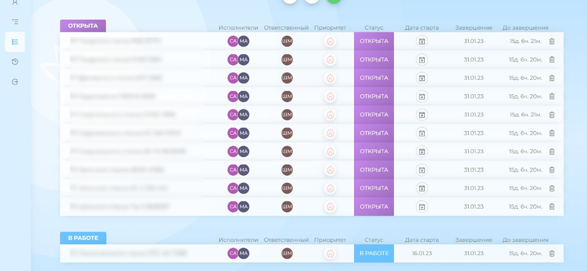
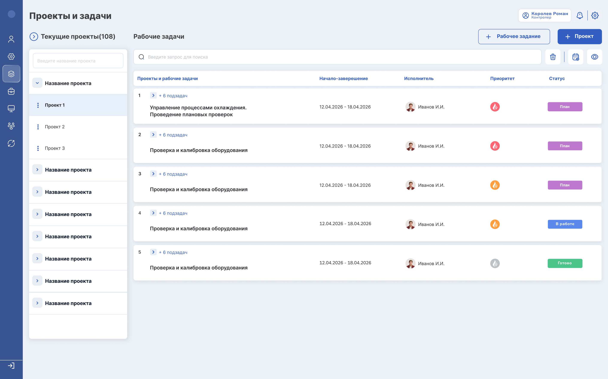
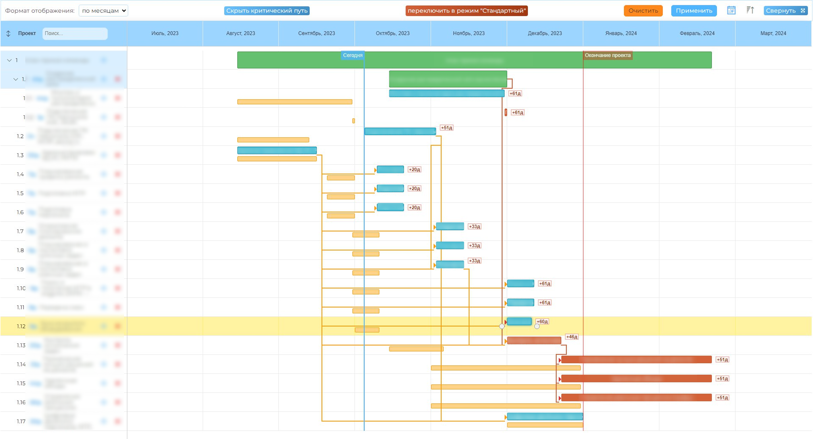
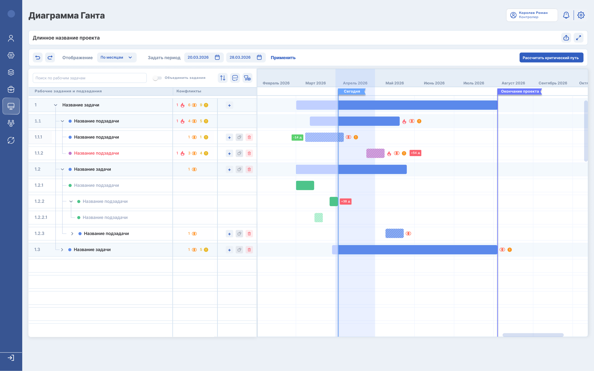
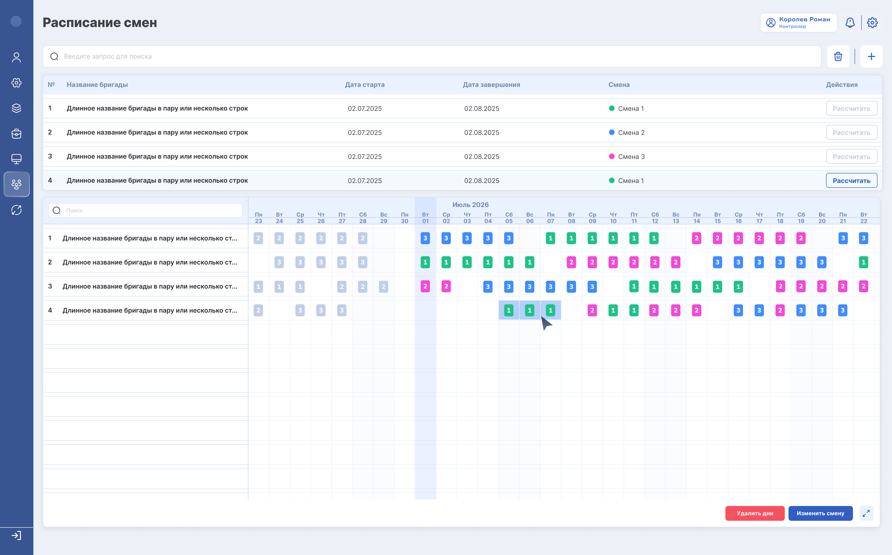
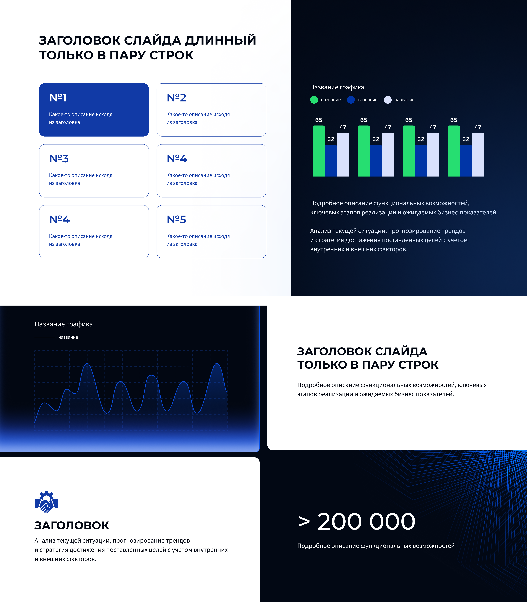
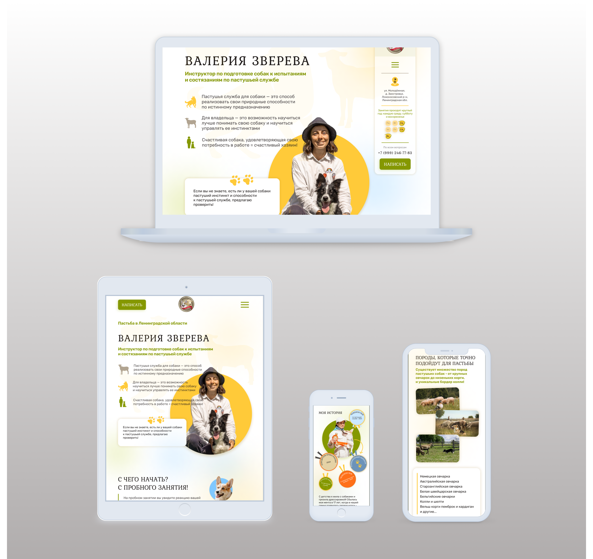
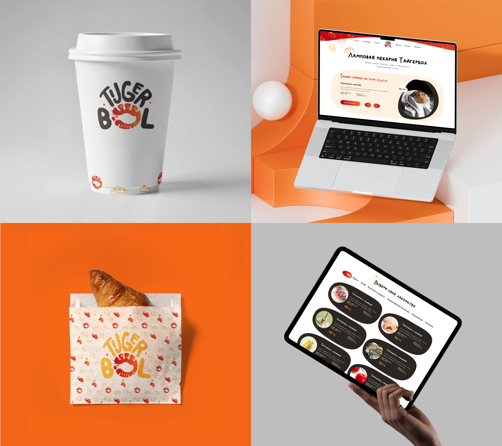

Привет, я
UX|UI ДИЗАЙНЕР
ОБО МНЕ
Превращаю сложную бизнес-логику в понятные, надёжные и быстрые интерфейсы.
Работаю на стыке потребностей пользователей, технических ограничений и бизнес-целей.
Не рисую ради красоты, а решаю задачи.
- 3 в 1 Адаптирую интерфейсы под любые устройства
- 20+ Экранов спроектировано и отрисовано под ключ
- −40% Уточняющих вопросов от разработчиков благодаря проработке User Flow и интерактивным прототипам
- 300+ млн ₽ — сумма сделок, закрытых с использованием моих презентационных материалов

Прототипирование
Внедряю процесс быстрой проверки гипотез до этапа кодинга
Полный цикл дизайна
От исследования и User Flow до интерактивных прототипов и передачи в разработку
Дизайн системы
Создаю и поддерживаю библиотеки компонентов для масштабирования продукта
Адаптивный дизайн
Делаю единый UX для веба, планшетов и мобильных устройств
КЛЮЧЕВЫЕ
КОМПЕТЕНЦИИ
Коммерческий дизайн
Готовлю презентации и инвестиционные материалы, которые помогают продавать
Коммуникация с командой
Работаю в связке с продукт-менеджерами, разработчиками, инженерами
КЕЙСЫ
Цифровизация АЭС


Проблема
Из-за высокой загрузки в процессе ремонтных работ у пользователей нет времени работать со сложными сценариями, поэтому им необходим простой и интуитивно понятный интерфейс. Текущий интерфейс модуля был перегружен статусами, цветами и визуальными элементами. Пользователи сталкивались со сложной навигацией, высоким когнитивным шумом и усталостью глаз при ежедневной работе. Существовал риск сопротивления внедрению нового решения, если интерфейс окажется непривычным или сложным в освоении.
Аудитория
Руководители среднего звена: Начальники бригад и мастера. Это люди, проживающие вне крупных городов, с низким уровнем цифровизации.
Цель
Снизить когнитивную нагрузку на пользователей и упростить выполнение ключевых сценариев, сохранив при этом привычную логику работы системы для плавного перехода на обновленный интерфейс.
Действия
- Совместно с продуктовой командой я проработала требования и пользовательские боли, собранные от заказчиков;
- Сократила количество действий в ключевых сценариях, за счёт упрощения навигации и упрощения логики взаимодействия;
- Уменьшила визуальный шум и перегруженность интерфейса, сделала интерфейс легче для восприятия.
Результат
- Новый дизайн был принят пользователями без сопротивления: им стало проще ориентироваться в задачах и статусах;
- Скорость работы с системой выросла на 15%. Сократилось количество действий в основных пользовательских сценариях;
- Снизилась когнитивная нагрузка при ежедневной работе.


Проблема
В систему была внедрена диаграмма Ганта как замена Primavera. Однако часть критически важного функционала осталась нереализованной, из-за чего интерфейс получился неудобным для работы. В результате это замедляло рабочие процессы и вынуждало пользователей одновременно использовать две системы.
Аудитория
Аудитория: Руководители среднего и верхнего звена, начальники бригад. Это люди, проживающие вне крупных городов, с низким уровнем цифровизации.
Цель
Объединить всех пользователей в едином цифровом контуре, исключив потерю данных из-за ручного переноса из системы в систему. На основе обратной связи от пользователей разработать интерфейс диаграммы Ганта, которая станет полноценной рабочей заменой Primavera.
Действия
- На основе пользовательского интервью, проведённого бизнес-аналитиком, мы сформировали и согласовали приоритетный список доработок;
- После анализа требований в рамках редизайна я дополнила продукт недостающим функционалом;
- Сделала структуру данных более читаемой, сохранила знакомые паттерны взаимодействия для плавной адаптации пользователей.
Результат
- Primavera полностью замещена новым функционалом системы - закрыты ключевые пользовательские потребности;
- Диаграмма Ганта стала основным инструментом планирования и контроля ремонтов для нескольких уровней управления: от начальников участков до главного инженера по ремонтам;
- Планирование и обновление графиков объединено в едином цифровом контуре: задачи автоматически синхронизируются с диаграммой, двойное ведение данных исключено;
- Сократилось время на выполнение типовых операций и навигацию по графикам.

Проблема
В виджете планирования персонала логика подсчёта смен была некорректной. Система не учитывала, что бригады меняются в процессе ремонта. ЛПР видели неверные данные. Переработка логики влечет за собой создание дополнительного функционала для руководителей среднего звена.
Аудитория
Руководители среднего и верхнего звена, начальники бригад.
Цель
На основе согласованной новой логики расчёта спроектировать интерфейс, который предоставит ЛПР корректные данные, а начальникам участков — удобный и быстрый дополнительный функционал, который пользователи примут без сопротивления.
Действия
- Предложила вариант ввода данных для корректного расчёта в макетах, исходя из новой логики. Разработала интерфейс “в едином окне” позволяющий пользователю выполнять все действия с бригадами без перехода в другие вкладки;
- Разработала интерактивную таблицу мгновенно отображающую перестройку графика после внесения точечных изменений;
- Пересобрала макет после получения обратной связи и выявления дополнительных факторов.
Результат
- Логика расчёта перестроена - ЛПР видят корректные данные по сменам;
- Новый функционал для начальников участков удобен и позволяет выполнять операции быстро;
- Новый интерфейс приняли без сопротивления.


Проблема
Компании требовались презентации для разных целей: инвесторы, гранты, крупные заказчики, выставки. Запрос на создание презентации поступал от сейлзов и был в режиме «ещё вчера» — всегда срочно, без наличия ТЗ. Приходилось тратить время на дополнительные уточнения и переделки. Сложные технические моменты объяснялись плохо.Также, приходилось привлекать коллег из продуктовой команды. Единого дизайн-стиля не существовало. В результате внутри компании был хаос, а внешние заказчики не видели целостного образа.
Цель
Убрать хаос и выстроить качественный процесс работы между дизайнером и сейлзами. Сформировать целостный образ компании во внешней среде за счет единого дизайн-стиля.
Действия
- Внедрила бриф — короткую форму для сейлзов, для четкого описания ТЗ;
- Разработала единую визуальную концепцию;
- Разработала библиотеку готовых шаблонов, позволяющую сейлзам самостоятельно редактировать шаблон и закрывать срочные запросы.
Результат
- За счет готовых шаблонов обращения сейлзов к дизайнеру за типовыми презентациями сократились в 2 раза;
- На 50% - сократилось время на дополнительные уточнения с использованием Брифа;
- В компании закрепился единый стандарт презентаций;
- Презентации помогли закрыть сделки на сумму свыше 300 млн рублей.
Проблема
Разработчикам была непонятна логика переходов и состояний интерфейса, описанная в техническом задании. Они начинали писать код, опираясь на финальные экраны без сценариев использования. Критическая проблема проявлялась на этапе code review, когда логические несоответствия и недопонимания обнаруживались слишком поздно. Это приводило к возврату задач в доработку, конфликтным ситуациям между разработкой и продуктовой командой и увеличивало стоимость разработки.
Цель
Снизить стоимость разработки — найти решение, которое позволит выявлять недопонимания и логические ошибки до этапа реализиции. Сократить количество конфликтных ситуаций между отделами и сотрудниками.
Действия
- Провели встречу с командой разработки и выявили ключевую причину ошибок;
- Я предложила решение в виде User Flow — схемы пользовательских путей с переходами;
- Закрепили новый подход в командной документации как стандарт.
Результат
- Количество уточняющих вопросов со стороны разработки сократилось на 40–60%, что ускорило процесс согласования решений;
- Снизилось количество спорных ситуаций между разработкой, продуктовой командой и командой внедрения за счёт единого понимания сценариев и логики продукта;
- Снизилась стоимость разработки. Ошибки и несоответствия стали выявляться на начальных этапах.
Проблема
Разработчики заходили в рабочую область, где хранились сырые, незавершённые макеты. Они начинали задавать вопросы по этим черновикам, критиковать незафинализированные решения и требовать объяснений. Это порождало конфликты, лишние созвоны и переделки уже написанного кода, что увеличивало стоимость разработки.
Цель
Выстроить рабочий процесс между дизайном и разработкой: Снизить количество конфликтов и стоимость разработки.
Действия
- Стала инициатором создания и согласования бизнес-процесса передачи макетов между продуктовой командой и разработкой. Защитила эту идею перед лидом;
- Предложила разделить Figma на три пространства с разными уровнями доступа:
- В работе — рабочая зона для продуктовой команды, где хранятся черновики и текущие итерации;
- На проверке — зона предварительного согласования с бизнесом и разработкой;
- Финальные макеты — макеты утверждены и не подлежат изменениям.
- Приняла активное участие в создании бизнес-процесса и его согласовании с командой разработки, настроила права доступа и закрепила правила перехода макетов между зонами.
Результат
- Рабочий процесс между командами выстроен, конфликтные ситуации свелись к минимуму;
- Лишние вопросы и вмешательства прекратились, 40% - экономия времени на работу с макетами;
- Снизилась стоимость разработки (точный процент не известен, так как это внутренние данные другой команды).


Проблема
В компании сложилась тяжёлая финансовая ситуация, поэтому традиционный корпоратив проводить не стали. На ретроспективе мы с продуктовой командой придумали альтернативу — внутренний КВИЗ по продукту, чтобы поддержать командный дух, подвести итоги года и в лёгкой форме повторить знания о системе, заказчиках и коллегах.
Цель
Укрепить знания о продукте и заказчиках, сфокусироваться на сплочении команды. Компенсировать отсутствие корпоратива без лишних затрат.
Действия
- Совместно с лидом продуктовой команды проработала концепцию и механику игры;
- Разработала дизайн презентации КВИЗа, смешав корпоративный стиль с новогодней атрибутикой;
- Согласовали призы для победителей — для дополнительной мотивации и азарта;
- Выступила соведущей КВИЗа: вела игру, помогала с подсчётом очков и оценкой команд.
Результат
- Знания о продукте и заказчиках укреплены;
- Настроение команды поднято — коллеги отметили тёплую атмосферу и оставили положительные отзывы;
- Командность достигнута;
- Отсутствие корпоратива компенсировано без финансовых затрат.
Проблема
Я пришла в компанию как продуктовый дизайнер для развития системного интерфейса, но 80–90% времени занимали срочные, несистемные задачи от владельца, который связывался со мной напрямую — презентации, правки, запросы в режиме «ещё вчера», часто без ТЗ и с просьбами работать ночью. Параллельно я должна была отдавать макеты разработке в срок по задачам продуктовой команды. Конфликт приоритетов был постоянным. Мой прямой руководитель не мог повлиять на ситуацию и позже уволился.
Цель
Добиться налаживания процессов, открыто озвучив свои приоритеты и цели в компании.
Действия
- Инициировала встречу с новым руководителем и открыто обозначила системные проблемы: конфликт приоритетов между срочными задачами владельца и моей основной работой над продуктовым дизайном, а также отсутствие понимания моего профессионального роста;
- Подняла вопрос о необходимости градирования и потребовала дать чёткую линию развития;
- Попросила настроить прозрачный процесс постановки задач между мной, владельцем и продуктовой командой.
Результат
- Были зафиксированы чёткие границы между продуктовыми задачами и внештатными запросами, рабочий график нормировался;
- Процесс постановки задач выстроен: внеплановые запросы перестали быть приоритетом по умолчанию;
- Появилась карта профессионального развития — стало понятно, куда и как расти внутри компании.

Проблема
На АЭС требовалось визуально удобное отражение данных мониторинга и прогнозирования различных работ. Существующие виджеты были разрознены, информация дублировалась, ключевые показатели терялись в обилии графиков и таблиц. Пользователи тратили время на поиск нужных данных вместо анализа.
Аудитория
Руководители среднего звена: Начальники бригад и мастера. Это люди, проживающие вне крупных городов, с низким уровнем цифровизации.
Цель
Разработать дашборд, который объединит все виджеты в едином визуальном пространстве, обеспечит быстрый доступ к ключевым метрикам и прогнозам, снизит когнитивную нагрузку при ежедневном мониторинге.
Действия
- Проанализировала потребности пользователей и сценарии использования дашборда на АЭС;
- Выделила ключевые метрики и прогнозные данные, требующие постоянного визуального контроля;
- Разработала единую визуальную логику для всех виджетов.
Результат
- Дашборд объединил все виджеты в понятную структуру, данные считываются быстрее;
- Ключевые метрики и прогнозы всегда на виду — время на поиск информации сократилось.


Проблема
Описание проблемы будет добавлено позже.
Аудитория
Описание аудитории будет добавлено позже.
Цель
Описание цели будет добавлено позже.
Действия
- Действие 1 будет добавлено позже
Результат
- Результат будет добавлен позже
Лендинги

Проблема
У инструктора с чемпионским опытом (20+ стран, ЧМ в Стокгольме и Будапеште) и собственной базой в Ленобласти не было сайта. Клиенты находили её только через сарафанное радио — это сдерживало рост и мешало профессионально презентовать услуги.
Цель
Создать лендинг, который передаст экспертность, вызовет доверие через достижения и даст чёткую информацию о тренировках и записи.
Действия
- Провела брифинг, изучила аудиторию и специфику пастушьей службы;
- Разработала структуру и прототип, согласовала с клиенткой;
- Оформила лендинг в природных тонах с акцентом на чемпионский опыт.
Результат
- Лендинг создан, отражает экспертность и уникальность услуги;
- Кейс опубликован на Behance. Перейти

Проблема
У пекарни "Тайгербол" отсутствовала визуальная идентичность: не было логотипа, брендбука, единого стиля в соцсетях (Instagram, ВКонтакте) и собственного сайта. Бренд не имел целостного лица, что мешало узнаваемости и привлечению онлайн‑заказчиков.
Цель
Создать запоминающийся и тёплый бренд, отражающий две ценности: уют и изысканность. Разработать логотип, айдентику и адаптивный лендинг, который вызовет доверие и желание заказать.
Действия
- Исследование — провела брифинг с владелицей, изучила аудиторию и конкурентов;
- Создала фирменный стиль — разработала логотип, цветовую палитру;
- Прототип лендинга — разработала структуру страницы, согласовала с клиентом;
- Отрисовала тёплый «домашний» дизайн для лендинга;
- Сделала адаптив под разные устройства.
Результат
- Бренд получил целостный образ и узнаваемый фирменный стиль;
- Лендинг показывает ассортимент и приводит дополнительные заказы;
- Кейс опубликован на Behance: «Тайгербол — вкусная атмосфера Саванны». Перейти